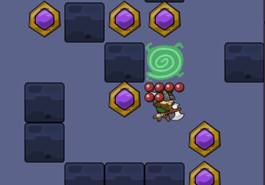
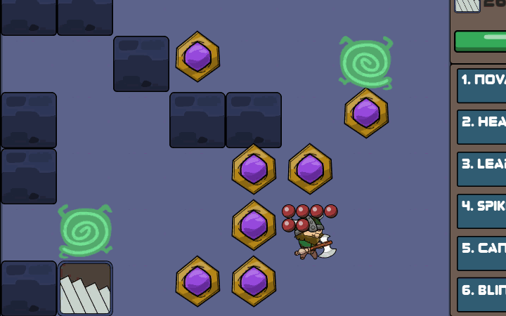

This post should be referred (or) redirected from my itch.io project page.
Spikes spell
Ever since I've started thinking about spells system, I wanted to design something which would leave some sort of an object that persists in the game world. Maybe it could have some kind of a lifetime that would only last for a specific number of turns and be destroyed. Or something like a bomb that would explode after a certain number of turns countdown. But a bomb seems like a hybrid between the Nova and Leap landing splash damage, so I didn't do it. Bomb items that the player can hold separately would also makes sense, but the entire inventory system to hold those bombs could explode the scope tremendously.
Then I turned into the idea of laying down traps for the enemy to step into. They would deal damage per turn, or even hold them in place for a specific number of turns. The latter idea sounds interesting but again I realized that it requires a lot of work to communicate how the trap behaves to the player. How many turns the trap will hold the enemy in place? Are they suppose to deal damage? What happens when all enemies are trapped? Et cetra, et cetra.
I finally settled with a simple version of spikes that activates every other turn. When an enemy walks onto the tile with the spikes when it's activated, they'll get hurt. Only one spikes trap can occupy a tile. And since I don't want to limit the player's ability to cast the spells other than the gems, they can lay however many number of spikes as they pleased. But I added a small twist to prevent the player from spamming traps all over the map; the spikes can hurt the player too.

As soon as the player cast the spell to lay the spikes under their feet, it actually starts deactivated. That gives you, as the player, a good opportunity to avoid it's damage initially. And if you're being chased by an enemy, they'll easily step onto it and get hurt on the next turn. Combined with the trap's two frames animation, I hope that's easy enough to communicate how it works and when it's dangerous.
Enough magic lessons for now, folks!
That essentially makes it the sixth and final spell for the player to randomly equip. I still had a couple more spell ideas at that point in time, and did think about adding more to the pool. But with only six hotbar slots available, I guess it kinda makes sense somehow to leave it here for the project of this size, and move onto the other areas.
Tentacles enemy
With the Alien's replication ability in place, it's time to move on to designing special behaviors for other enemies.
I wrote about not wanting to give projectiles to the player in the previous post. I genuinely believe that it's quite boring for the player to simply dedicate projectile-shooting spell to one of the limited six hotbar slots. But... what if one of the enemies could shoot projectiles? And better yet, what if those projectiles could hurt both the player and other enemies alike? I've always fascinated with games that designed around systems that can interact with other systems based on a simple rule set. Let's just say this is gonna be my mediocre take on this particular idea.
So I gave projectiles to the Tentacles enemy. The rules are pretty simple. It'll shoot a small pointy thing to the player when they're both aligned on either horizontal or vertical axis (aka, direct line of sight). The projectiles will still follow the basic mechanic of the entire game, they'll move only when the player moves. They do move two tiles per turn, can't go through walls and can hurt pretty much any living being on the map. The Tentacles won't do the regular melee brawl anymore when they're close to the player, since that would essentially mean that they now have two different attack modes. I tried it out a bit and it feels a little confusing. Combined with a short cooldown between each projectile throw, it's kinda hard to know (and also to identify when programming) in order to decide between melee and range attacks.

I have to say, I quite like how it turned out to be honest. Tentacles will be the first enemy type with special ability to spawn after the Ants (which are pretty much the basic punching bags and experience grinders). You mind was becoming a bit blank (and maybe even a little bit frustrated) after plowing through a dozen Ants. As soon as a single Tentacles appears, the fight becomes dynamic. Questions start to arise in your brain. When do they shoot? How bad are the projectiles? What's the frequency between the shots? Can I use the walls as cover? Do I get close to deal with them, or keep them at arms length... so on and so forth.

I think that's what makes them different from the Alien dudes. The Aliens hide behind the surprise of their replication upon their deaths. Even if you already know that, you don't want to get sandwiched between two Younglings when you're low on health. Tentacles, on the other hand, are just fun to mess around with.
Totem Head enemy
Now, let's talk about the design of the very last enemy type. I'm calling it the Totem Head, because it looks like a totem... with a face. I was seriously planning about making it into some kind of a boss enemy. Only one spawned in a level, annoying special ability, backed up with maxed out 8 health points. That sort of thing. And then I thought, the difficulty curve between this guy and the other enemies would become quite high. So I went for something else that would make sense with its visual sprite.

Yup, it stomps on the ground and deals splash damage when close to the player. Following the trend of the Spikes and the Tentacles projectile, the splash can hurt other enemies too if they get caught nearby. The idea is pretty simple. Totem Head is an enemy which is intimidating to look at with an intimidating attack, paired with a tough skin. But once you know your way around them, it's not really hard to deal with them.
That's basically what I aimed for when designing all the enemies in this game. They should be unique in their own way, and provide a bit of a learning experience when you first encounter them, but not super complicated to overcome. And remember, killing the enemies will grant you xp and new spells, but they're optional in order to progress into the dungeon.
Conclusion
I'm quite satisfied with what I have so far. There are a couple of bug I'm totally ignoring to fix. They're quite annoying whenever they happen, but not annoying enough for me to dive into. Plus, I'm already over the one hundred hours mark I originally set at the start of the project a few months ago. So, I'm calling this done and move on to something else.
Is this the best I can do? No. Is this everything I can come up with? Absolutely not. I still have at least one solid design for a new enemy type in my backlog, but I'm not gonna do it anymore (at least in this game). To give you a bit of a hint, it involves some necromancy.
There are still a bunch of ideas running around in my head. But I'd rather explore them in a fresh new project instead of adding more dimensions to this game. This project was supposed to be my design workout, and also the entry point to the roguelike genre in general. And I'm pretty pleased with everything I've learned so far. I'm still gonna write a separate post about everything I hate about this game though, cause failures can be more valuable of a lesson sometimes.
The game is available on my itch.io page. Go check it out. Do whatever you want, as long as you don't package it and sell it somewhere else. If you want a Mac or a Linux build, do reach me out by leaving a comment there.